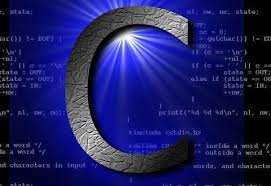
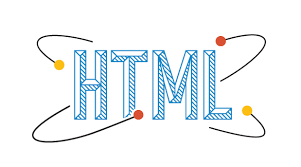

Langage de programmation
En informatique, un langage de programmation est une notation conventionnelle destinée à formuler des algorithmes et produire des programmes informatiques qui les appliquent. D'une manière similaire à une langue naturelle, un langage de programmation est composé d'un alphabet, d'un vocabulaire, de règles de grammaire et de significations
Langage haut niveau
En informatique, un langage de programmation est une notation conventionnelle destinée à formuler des algorithmes et produire des programmes informatiques qui les appliquent. D'une manière similaire à une langue naturelle, un langage de programmation est composé d'un alphabet, d'un vocabulaire, de règles de grammaire et de significations
Langage bas niveau
Un langage de programmation de bas niveau ne fournit que peu d'abstraction par rapport au jeu d'instructions du processeur de la machine. Les langages de bas niveau sont à opposer aux langages de haut niveau, qui permettent de créer un programme sans tenir compte des caractéristiques particulières (registres, etc) de l'ordinateur censé exécuter le programme.
Comparaison
| N langage | photo | domaine |
|---|---|---|
| C |  | kernel linux, windows,... |
| JV |  |
site web, games |
| HTML |  | contenu des sites web |